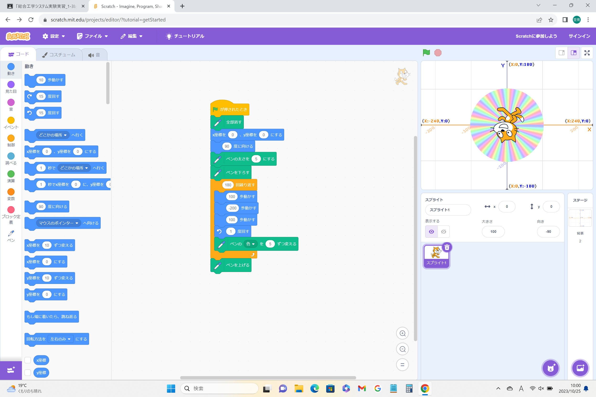
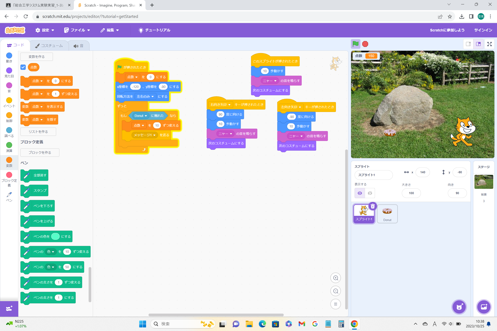

1週目のレポート ： 公大高専１年実習I-1
3b班 42番 そら
第1週目
1-1 サイエンスアート

1.内容
スクラッチを使って線を書くプログラムを作成した。 これは、緑の旗を押すと、x座標0,y座標0,90度向けた位置から、100歩動き-200歩動き100歩動き1度回すという作業を180回繰り返すプログラムになっている。 その動きにペンを使って線を書き、色を5ずつ変えることでカラフルな円になる。
2.感想
どの位置から、どれくらいの歩数で、何回繰り返せば良いのかを決めることが難しかった。久しぶりのscratchだったので懐かしく、楽しかった。
1-2 ゲーム

1.内容
猫を動かせて、落ちてくるドーナツをキャッチするプログラムを使った。 猫は左右に動き、動いたときにニャーと鳴くようになっている。また、ドーナツをキャッチすると10点ずつ点数がつく仕組みになっている。 ドーナツは1から4までの乱数により落ちてくる秒数が変わり、猫にぶつかると消える仕組みになっている。
2.感想
ドーナツ以外に落ちてくるものを増やして、それにぶつかると点数が-5点になるというプログラムにするなど、工夫することでもっと面白いゲームが作れるなと思った。
1-3 ホームページ作成
私のホームページ
1.内容
Githubを使って自分のホームページを作成した。
2.感想
始めてホームページを作ったので少し緊張したが楽しかった。そして、自分がプログラムした文章がしっかりと表示されていてすごいなと思った。